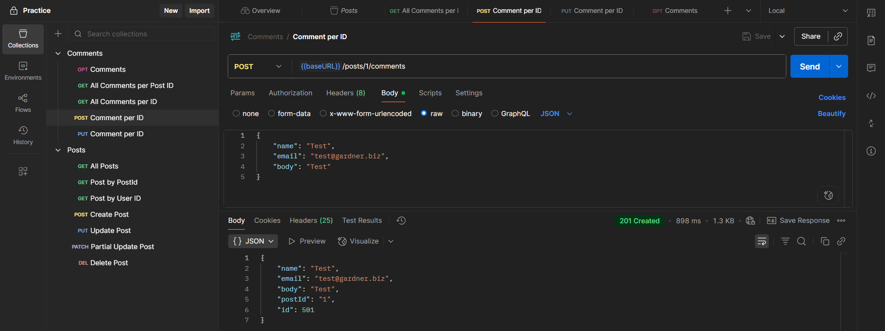
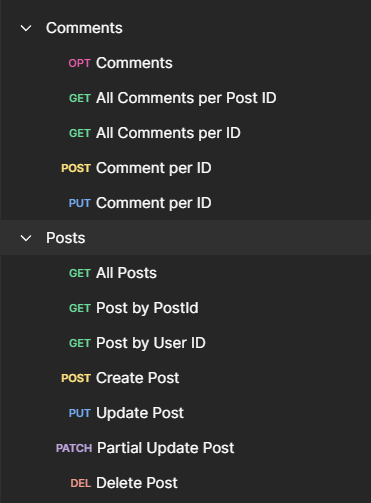
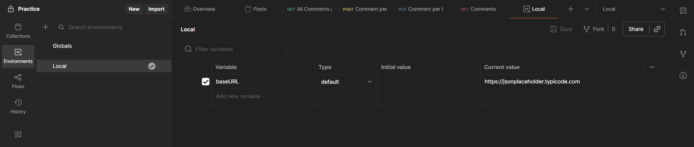

Completed
Postman API Testing Framework
API testing with Postman
Project overview
This comprehensive API testing framework was developed using Postman to ensure robust validation of REST APIs using Fake APIs from JSON Placeholder.
Key features
- Comprehensive test suite covering GET, POST, PUT, PATCH, DELETE operations
- Dynamic environment variable management for Local
Challenges & solutions
URL Management for GET and POST, and PATCH
API URLs for GET pertains to the general items of the API while POST and PATCH refers to each individual items.
Project screenshots
Screenshots retained from my original portfolio.


